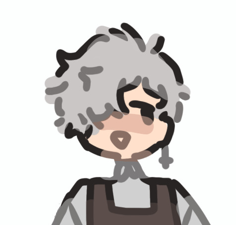

About Me
I'm Austin, the site's creator. I created this site to better help players get a footing in Stardew Valley, as I know when I first started I had to have 30 different google searches up in order to do things "properly". I'm a high school sophomore currently interested in Computer Science. If you wish to contact me, or just simply ask a Stardew-related question, please use the form below.